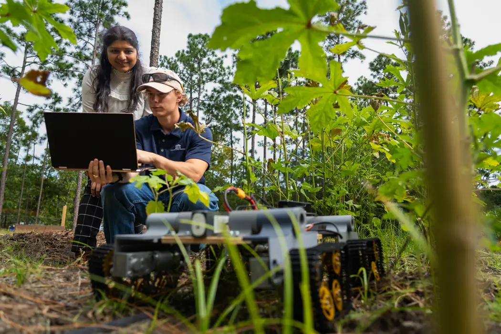
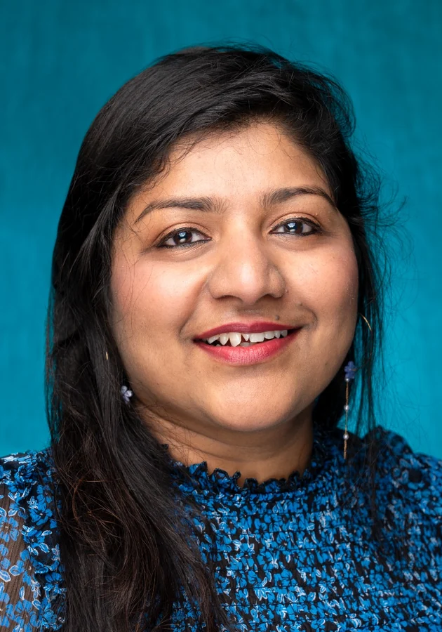
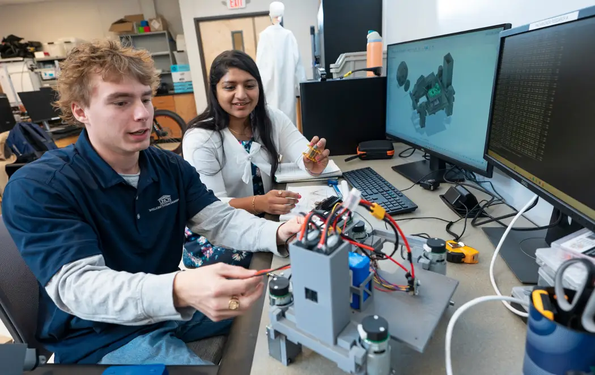
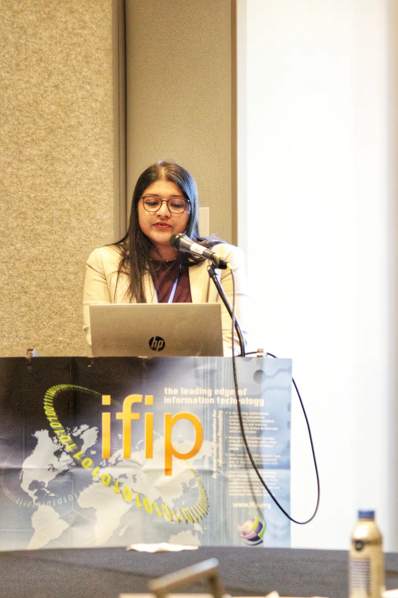
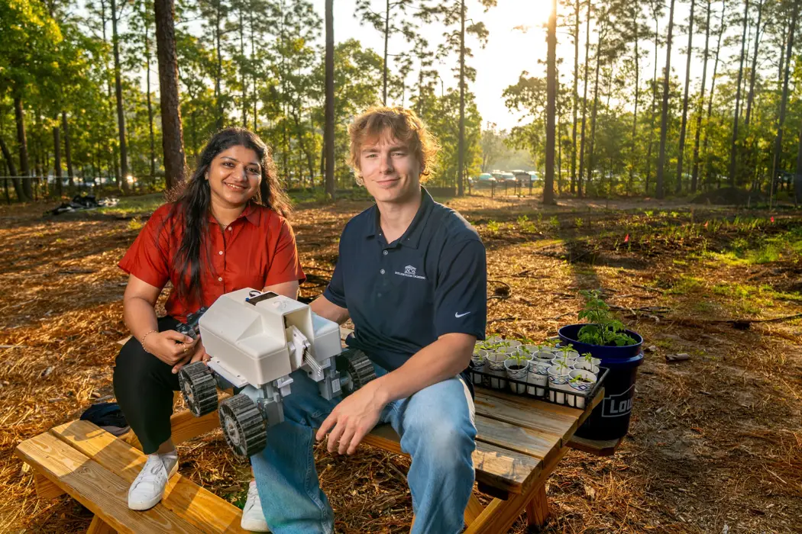
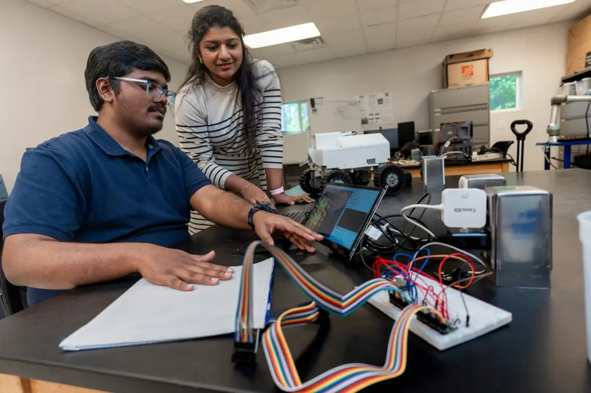
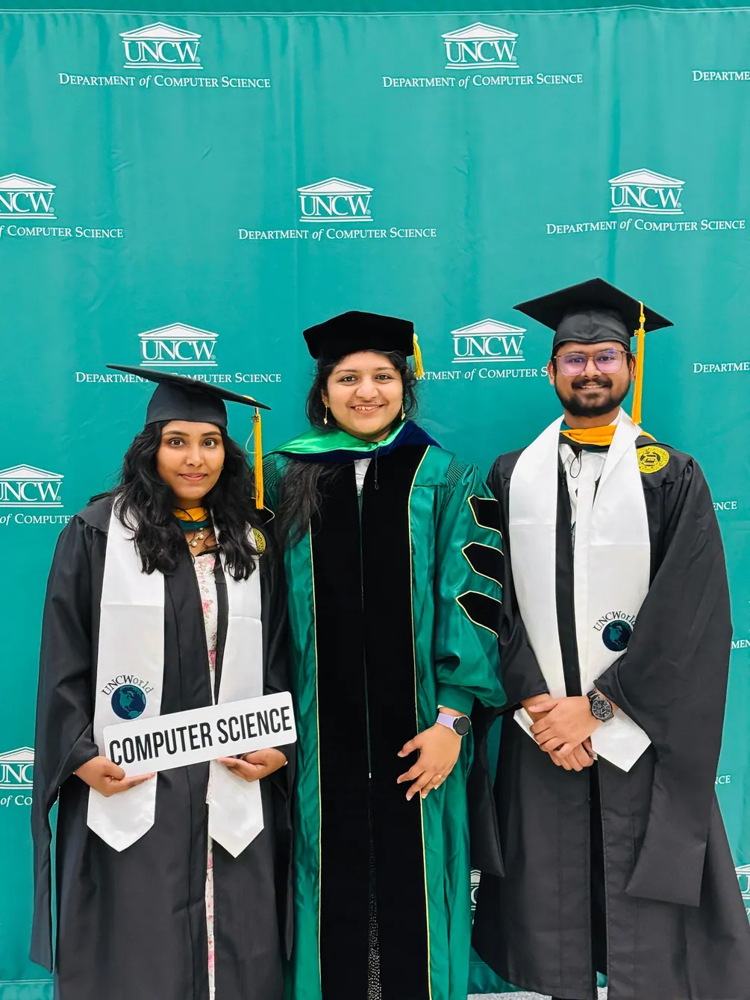
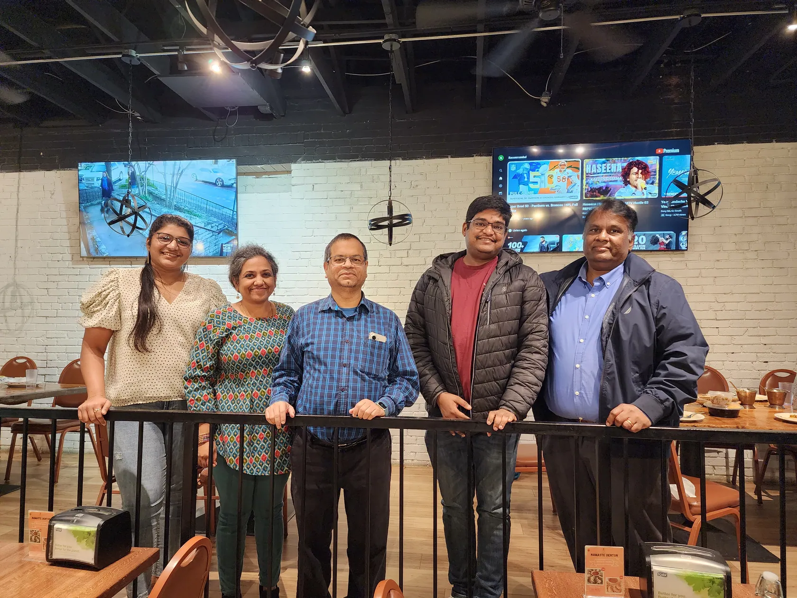
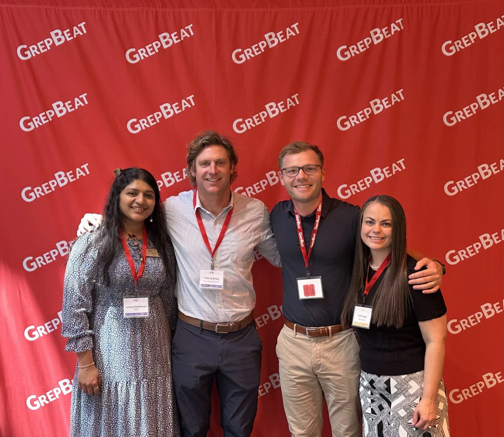
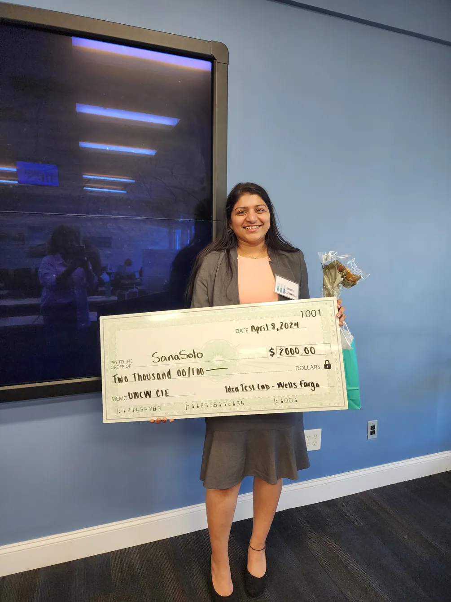

01 / FIELD SYSTEMS / SANA SOLO01.
INTELLIGENCE IN THE FIELD
From soil to insight.
Field sensing, edge intelligence and agricultural robotics. Follow the path from real measurements to systems designed to work outdoors.
DR. LAAVANYA RACHAKONDA / COMPUTER SCIENCE / UNCW
Assistant Professor of Computer Science at the University of North Carolina Wilmington. I lead the SIPS Laboratory, where intelligent sensing, edge AI and cyber-physical systems meet real-world needs.

THE WORK / IN MOTION

01 / FIELD SYSTEMS / SANA SOLOINTELLIGENCE IN THE FIELD
Field sensing, edge intelligence and agricultural robotics. Follow the path from real measurements to systems designed to work outdoors.

02 / LAB LIFE / HANDS-ON DISCOVERYMENTORING THROUGH MAKING
Inside SIPS, students explore hardware, embedded programming, sensing and testing. The research community is part of the story, not just the results.

03 / SCHOLARSHIP / REAL-WORLD CONVERSATIONSRESEARCH BEYOND THE LAB
Publications, workshops, professional collaborations and community engagement connect laboratory research to the broader world.

SIPS / IN THE FIELDFROM PROTOTYPE TO PUBLICATION
Smart agriculture, healthcare, maritime systems, and secure connected technology. Explore the projects and the publications that grew out of them.
Select a domain to see its projects, papers and source records.
SELECTED PATHWAYS
From sensing soil to protecting maritime infrastructure, every platform is a step toward practical, trustworthy cyber-physical intelligence.
See the field rover, student research and research publications behind the SIPS Lab’s smart agriculture work.
MOMENTS IN RESEARCH
From interdisciplinary demonstrations to field experiments and student projects.
LAB LIFE / PHOTO STORIES
01 / RESEARCH
My work studies how sensing, embedded computing and data-driven methods can make physical systems more responsive, accessible and resilient.

FOUR DOMAINS · ONE APPROACH
Our work moves between sensors, embedded intelligence, secure communications and the physical world—from soil and crops to healthcare technologies and maritime systems. Explore the four research domains below, with their projects and indexed publications.
INTERACTIVE ECOSYSTEM DRAG A NODE · CLICK TO OPEN
FILTER THE MAP
Cyber-physical systems connect all four areas through sensors, low-power computing, ML, communication and responsible deployment.
SELECTED PROJECTS
RESEARCH & EVENT PHOTOGRAPHY
Hands-on experimentation and project work from the SIPS Laboratory.
NEWS / MAGAZINES / PUBLIC ENGAGEMENT
University stories, research coverage and public recognition highlighting the people and projects of the SIPS Laboratory.
RESEARCH IN PUBLIC
Laavanya Rachakonda presents research at IFIP. The conference record is part of how SIPS research reaches peers beyond Wilmington.
INSIDE SIPS
Laavanya Rachakonda and Samuel Stasiewicz troubleshoot an agricultural rover prototype, moving between CAD, hardware and hands-on mechanical assembly.
OUR MISSION
SIPS brings together sensing, embedded systems, edge AI and physical-world experimentation. The lab emphasizes applied research, student-led development and systems that operate under real resource constraints.
FROM IDEA TO FIELDWORK
A student-developed autonomous rover integrates embedded sensing, edge analytics and real-world soil measurements. It has supported multiple conference publications and continued agricultural research.
Read the UNCW feature ↗PROJECT GALLERY
THE RESEARCH COMMUNITY
Student mentoring spans UNCW graduate and undergraduate research, external doctoral collaborations, and outreach. Projects and mentoring include graduate and undergraduate researchers.
STUDENT SCHOLARSHIP
SIPS supports student-led research through fieldwork, prototypes, independent studies, capstones and graduate theses.
RESEARCH WITH US
Students interested in sensors, embedded systems, CPS, edge intelligence, computer vision, cyber-physical security and smart agriculture can reach out with a short introduction and an area of interest.
Projects, capstones, honors theses, DIS and first-year research experiences.
Thesis-oriented, systems-based research connecting methods to working prototypes.
Interdisciplinary and community-facing work with researchers and partners.
RESEARCH & EVENT PHOTOGRAPHY
Approved images and a video showing the engineering and field-testing process behind SanaSolo.
Established in 2021 · University of North Carolina Wilmington
03 / PUBLICATIONS
Explore the publication record, search by topic, filter by year or type, open DOI records and copy formatted citations. Publications are separated from accepted work.
IDEAS SHARED
Conference presentations such as the IFIP and IEEE SanaSolo papers document how the rover evolved from preliminary sensing into an integrated research platform.
SEARCHABLE BIBLIOGRAPHY
04 / MENTORING
Browse current and former researchers, master’s thesis committees, and doctoral dissertation committee roles. Public document links are shown only when verified.

SIPS / PEOPLE & MILESTONESPEOPLE & MILESTONES
Laavanya Rachakonda with graduates Vamsidhar Reddy Thimmareddy and Sri Harshitha Patibandla at UNCW commencement, after their ComfortCare and precision livestock research.
Distinct committee roles are counted separately from capstone advising, independent research and other mentoring activities.
Students are grouped by program and mentoring role. Graduate thesis chairs and committee appointments are counted separately.
RESEARCH & EVENT PHOTOGRAPHY
Students, researchers, and prototypes in action.
DEEP ROOTS / DOCTORAL RESEARCH
Doctoral work at the University of North Texas, 2017–2021 — a foundation in smart healthcare, stress monitoring and IoMT-based edge intelligence.

SIPS / THE ACADEMIC JOURNEYTHE ACADEMIC JOURNEY
Research roots extend beyond graduation. Laavanya Rachakonda meets with her doctoral advisor Saraju P. Mohanty and collaborators at an IFIP conference.
PH.D. DISSERTATION · MAY 2021
My doctoral research developed Stress-Lysis, iLog and SaYoPillow to investigate automatic stress monitoring, food-intake behavior, privacy, and intelligent edge devices. The systems combine physiological sensing, machine learning, embedded computing and connected healthcare.
Advisors: Saraju P. Mohanty (major professor) and Elias Kougianos (co-major professor).
THREE INTERCONNECTED SYSTEMS
Physiological stress-level monitoring through sensor signals and machine learning.
Intelligent food-intake monitoring, quantification and stress-eating awareness.
Privacy-aware sleep- and stress-management research within IoMT systems.
RESEARCH & EVENT PHOTOGRAPHY
Professional conference and academic connections.
INTELLECTUAL PROPERTY / TRANSLATION
Patent applications and university invention disclosures are listed separately. A disclosure is not a granted patent, and publication is not grant.
INVENTION & APPLICATION
UNCW recognition of the earlier SAFE invention disclosure acknowledges collaborative translational work. An invention disclosure is not a granted patent.
RESEARCH DEVELOPMENT / LIFELONG LEARNING
A record of research development, entrepreneurship, proposal-writing education and professional events that continue to inform my research and mentorship.
KNOWLEDGE IN MOTION
TerraSense is a broader proposed ecosystem linking agricultural robotics and plant assessment. Its NCInnovation Pipeline project specifically investigates image-only artificial intelligence for non-invasive plant nutrient, health and yield assessment. Under that initiative, the team is exploring how visual plant cues can inform future agricultural decision support without relying on direct soil-testing devices. Results remain under development. The adjacent photograph shows SanaSolo field sensing within the broader TerraSense ecosystem, not validation of the image-only Pipeline study. UNCW project announcement ↗
RESEARCH & EVENT PHOTOGRAPHY
Conference and professional development photographs from research and university events.
RESEARCH TRAJECTORY / TIME
Explore academic milestones, research development and publication activity. Filter and inspect the chronology rather than scrolling through a static biography.
FROM RESEARCHER TO MENTOR
I completed my Ph.D. in Computer Science and Engineering at the University of North Texas in May 2021. My dissertation, IoMT-Based Accurate Stress Monitoring for Smart Healthcare, laid the foundation for my work in connected healthcare and secure cyber-physical systems at UNCW.
Review note: using the existing approved faculty portrait until the exact personal Ph.D.-graduation photo can be retrieved from the original Instagram upload.
THE IMAGE ARCHIVE / AN INTERACTIVE EXHIBIT
Follow the moments behind SIPS research. Choose a collection, browse the filmstrip, or play the story one photograph at a time.

Conference & workshops
Innovation and entrepreneurship at Grep-a-Palooza 2026.
NCInnovation event post ↗Tip: choose a thumbnail or use the left and right arrow keys. Fullscreen opens the existing photo viewer. Motion is optional and respects reduced-motion settings.
05 / TEACHING
My teaching bridges programming, embedded hardware, communication and physical-system behavior—often carrying student ideas from a course into active research.
BEYOND THE CLASSROOM
Vamsidhar Reddy Thimmareddy demonstrates the ComfortCare prototype and poster, bringing connected sensing and pressure-injury research into a student showcase.
MY APPROACH
Place software and theory alongside sensing, hardware and physical constraints.
Use Simulink, embedded systems and networking simulation to connect concepts with behavior.
Turn promising course work into honors research, capstones and publications.
06 / RECOGNITION & IMPACT
Funded research, translation, community partnerships, student achievements and scientific service. Proposal status is shown explicitly.

SIPS / IMPACT & SUPPORTIMPACT & SUPPORT
Laavanya Rachakonda receives third place at the UNCW CIE IDEA Test Lab for SanaSolo. The project developed from student research into a promising agricultural sensing system.
SELECTED GRANTS
VERIFIED PROFESSIONAL SERVICE · 2026–2027
Leadership appointments are distinct from conference paper authorship; the existing publications list is retained without duplicate entries.
Named a workshop chair for “Distributed AI and Blockchain for Secure CPS and Smart Networks” (DAB-SN), co-located with the 28th International Conference on Distributed Computing and Networking (ICDCN 2027), January 4–7, 2027, at NITK Surathkal, India. The specific one-day workshop date has not yet been confirmed.
Official ICDCN workshop listing ↗ Workshop organizers ↗Served as a General Chair of the 2nd International Conference on Intelligent Computing and Sustainable Innovation in Technology (IC-SIT 2026), held September 8–10, 2026, at Silicon University, Odisha, India.
Official organizing committee ↗Co-chaired the special session “Resilient IoT & Edge Intelligence for Sustainable Infrastructure & Health” at the IEEE Computer Society Annual Symposium on VLSI on July 9, 2026, with Ajay Kumara Makanahalli and Anand Bapatla.
Official conference program ↗CONFIRMED RESEARCH PRESENTATION · DECEMBER 2026
IBUFUNDA: A Smart Mattress-Topper for Real-Time Pressure-Injury Risk Monitoring and Caregiver Support. Listed in the official AHFE 2026 Hawaii scientific program for December 1, 2026, during the session “Applications of Technologies in Healthcare and Cognitive Assessment I” (11:20 a.m.–12:20 p.m. Hawaii time). Authors: Finny Gaddala, Laavanya Rachakonda, Kevin Craig, and Ajay Kumara Makanahalli Annaiah. This is a conference presentation record, not a claim of an already published full paper.
Official AHFE 2026 program ↗AFFILIATED INSTITUTIONAL ACTIVITY
UNCW 8th Annual Cybersecurity Conference — October 8–9, 2026. The university's maritime cybersecurity track addressed cyber risks, resilience, and regulatory readiness for the Marine Transportation System. Dr. Rachakonda is listed by UNCW as a Technology Co-PI of MCARTEC. The public event page does not establish that she presented or led a workshop at this event.
UNCW MCARTEC research and events ↗AWARDS & RECOGNITION
SERVICE & PARTNERSHIPS
RESEARCH & EVENT PHOTOGRAPHY
Recognition and community engagement.
BEYOND THE PUBLICATIONS AND AWARDS
Some of the moments I value most never appear in a citation count: a student who gets their prototype working, a successful defense, a thoughtful note, or the excitement of discovering what a new system can do.
A PERSONAL REFLECTION
Research often means a lot of debugging, starting over, and finding another way forward. The rewarding part is seeing students learn to trust their ideas and put them to the test.
Whether it's a first research poster, an undergraduate prototype, or a graduate student completing a thesis, those moments are reminders of why teaching and mentoring matter to me.
I've also kept meaningful notes from students over the years. When the original handwritten images are available for this website, I want those words to stand on their own—not be replaced with invented quotations.
07 / CONTACT
Whether you're a student, a collaborator or an organization exploring applied research, I'd be glad to hear about your ideas.
LET'S BUILD SOMETHING
From a sensor prototype on the bench to a field-ready system, I enjoy working through practical challenges with students and collaborators. This photograph shows IBUFUNDA research electronics development with Finny Theophorus Gaddala.
REACH OUT
rachakondal@uncw.edu ↗Department of Computer Science
University of North Carolina Wilmington
Wilmington, North Carolina, USA
↑ ↓ to navigate · Enter to open · Esc to close